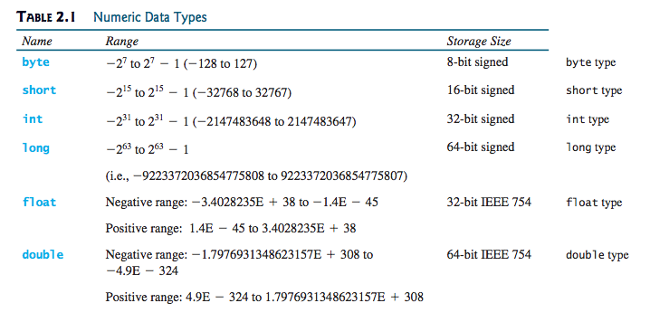

CS201: Introduction to Programming
Lecture 02
Reading assignment: chapter 2
Lesson Objectives
- Write a program to perform simple computations
- Obtain input from the console
- Understand identifiers: variables, constants, methods and clauses
- Assignment statements
- Understand primitive data types
- Understand numeric data types
- Understand operators
- To distinguish between postincrement and preincrement and between postdecrement and predecrement
Reading from the Console
To read data from the console we need a helper tool. Considering the following example: You need to write a program that inputs data (two numbers) from the user and display the sum.
Scanner input = new Scanner(System.in); double radius = input.nextDouble(); double area = ...
Note that input is now a scanner that can be used to read data from the console.
Writing to the Console
To print data to the console, we use the function System.out.println(...).
System.out.println("area = " + area);
Identifiers
- variables
- constants
- methods
- clauses
Assignments
An assignment statement designates a value for a variable. An assignment statement can be used as an expression in Java.
Operators
- Standard mathematical operators
- Additional "augmented assignmetn operators"
- Increment/decrement operators
Primitive Data Types
In addition to numeric data types below, Java provides also char and boolean primitive data types..
Numeric Data Types
Data Casting and Coversion
With Java, you can reduce or increase the precision of a number.
:Lab Exercises Using Eclispe
For each of the following exercise, practice developing and running your program with Eclispe. Note that the lab assignments are not graded.
- Write a program that will ask the users for three numbers and display the average of thes numnbers
- Write a program that inputs a dog's age from the console and display the age equivalent in human years.